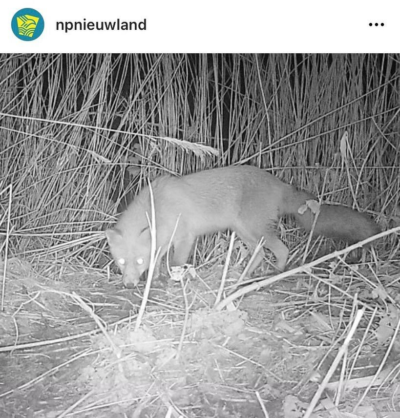
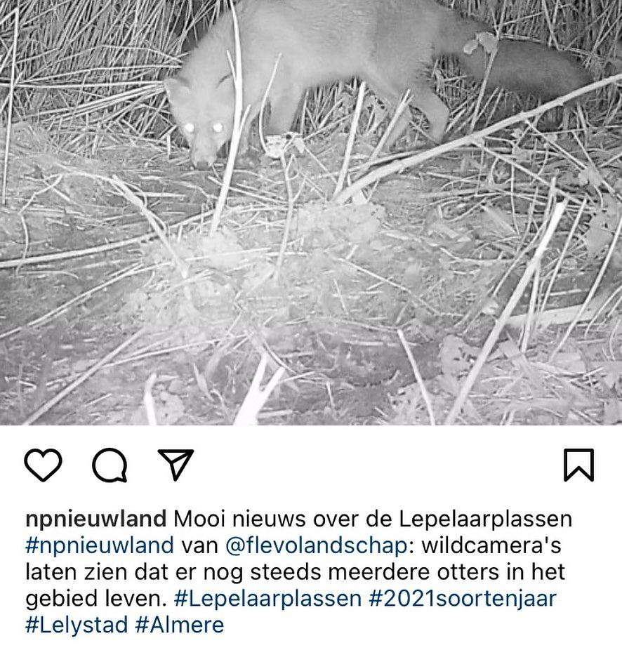

Vos, geen otter
24 februari 2021 · Nationaal Park Nieuw Land
- Op de foto
- Vos
- Het ging over
- Otter


In het @npnieuwland heten Vossen blijkbaar Otters 🤔
Ingestuurd door @boswachter_jelle !


In het @npnieuwland heten Vossen blijkbaar Otters 🤔
Ingestuurd door @boswachter_jelle !